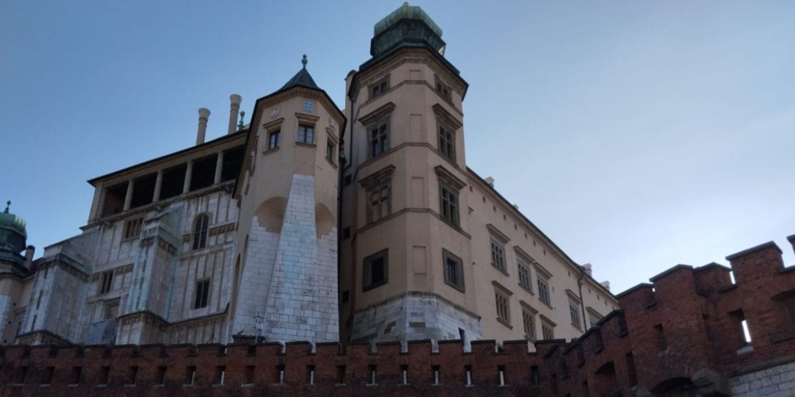

Wawel
Zamek królewski na Wawelu powstał w XI wieku, a od połowy tego wieku służył władcom Polski jako ich siedziba. Od koronacji króla Władysława Łokietka w 1320 roku koronowani byli tu wszyscy polscy królowie (poza Stanisławem Leszczyńskim i Stanisławem Augustem Poniatowskim). Na Wawelu znajduje się również Katedra pod wezwaniem św. Wacława i św. Stanisława. Została wzniesiona w latach 1320 - 1364. W świątyni mieści się grobowiec z relikwiami św. Stanisława, trofea wojenne polskich królów m.in. chorągwie krzyżackie zdobyte w 1410 roku pod Grunwaldem oraz sztandar turecki zdobyty pod Wiedniem w 1683 roku. W Katedrze spoczywają polscy święci, władcy, najwybitniejsi przywódcy i poeci.
Po III rozbiorze Polski w 1795 roku zamek został zmieniony na koszary armii austriackiej i pełnił tą funkcję również w wieku XIX. Wojsko opuściło Wawel dopiero w 1905 roku, a w 1930 roku zamek został przerobiony na muzeum. W czasie II wojny światowej siedzibę miały w nim władze Generalnego Gubernatorstwa. Rezydował tam Hans Frank.
Godnymi uwagi na wawelskim zamku są arrasy przywiezione przez króla Zygmunta Augusta. Są to tkaniny naścienne wyprodukowane w Brukseli. Przedstawiają one sceny biblijne, zwierzęta, a także herby i monogramy. W zamku jest ich aktualnie 137.
